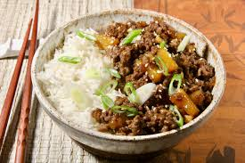

Teriyaki ground beef skillet

Delicious teriyaki bowl
A quick and easy one-pan, kid-friendly skillet dinner with sweet, rich and flavorful meat
and an Asian twist.
The perfect weeknight dinner served with white rice.
Ingredients
- 1 pound lean ground beef
- 1/2 cup finely chopped onion
- 3/4 cup thick teriyaki sauce
- 1/4 cup chopped water chestnuts, (drained)
- 1/2 (8 ounces) can pineapple tidbits (drained)
- 1 teaspoon finely chopped garlic
- 1 teaspoon minced fresh ginger
- freshly ground black pepper to taste
- 1 teaspoon sesame seeds
- 1 tablespoon sliced green onion
Steps
- over medium heat, add ground beef and onions to a large skillet
- cook until the beef is fully cooked (drained if necessary)
- add teriyaki sauce, water chestnuts, pineapple, garlic and ginger
- stir to combine, turn the heat down, and simmer for about 5 minutes
- sprinkle with sesame seeds and sliced green onions and serve